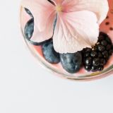

20 Types of Berries and Their Health Benefits
Blackberries
As with all the berrries, blackberries also contain various health-protective polyphenols.
Blackberries show a significant protective effect aginst LBL-oxidation, a prominent cardiovascular risk factor, in human intervention studies.
Studies also show that wild blackberries are 3 to 5 time high in polyphenols, so get outside and pick your own.
Nutrition Information
- Calories: 62
- Carbohydrates 15g
- Fat: 1g
- Protein: 2g